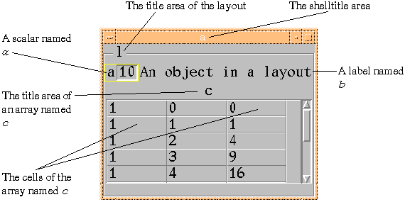

A layout is a container whose children can be of any classes. The arrangement of the children in a variable x to be bound to this class usually determines the geometry of the display. A+ arranges the display, however, when the variable is a vector. If the value is a boxed vector of vectors, then each item of the value composes a row in the layout. For example, if x is a layout defined by (`a `b;`c), then the display of x as a layout shows the displays of a and b side by side, and the display of c below these two. If x is a matrix and all its elements are distinct, then the display of the child x[i;j] occupies the (i;j)th position in the display of the layout. If there are duplicates in x, then they must occupy contiguous positions in a subrectangle, in which case the display of the child fills all these "positions" in the layout. The (i;j)th position can be left vacant by assigning x[i;j]û` (the empty symbol). The arrangement of a layout can also be specified by setting the at attribute on each of its children. Cf. "Layouts, Geometry, Constraints".
If the newshow attribute is 0 (the default), objects appended to an existing layout do not automatically appear; each must be shown with the function show or its mapped or show attribute must be set to 1 or hide to 0.Visual Representation
A line does not appear between the title area and the rest of the layout. Instead, the frame or outline is brought up higher, into the title area, and the title is set into it. Moreover, the title is left justified rather than centered. Note the change for scalar display also.aû10 bû'An object in a layout'; `b is `label cû(É10)Ê.*É3 lû(`a`b;`c) `l is `layout `l has (`shelltitle;'a') show `l
(virtual row, virtual column, number of virtual rows, number of virtual columns)
Conceptually, a layout can be placed over an imaginary grid so that the border of each
object
in the layout lies on grid lines. It is then possible to describe the position and size of
each object by the row index and column index of the grid block containing the upper left
corner of the object, and the number of grid rows and columns that the object overlaps. If
the grid is the minimal one, i.e., the one with the fewest possible grid lines, then these
four numbers are the value of this attribute. The grid intervals need not be equal in
either direction.
The origin for the grid coordinates is the upper left corner of the layout. Note that the
four elements of an at attribute value can be set individually using the attributes vrow,
vcol, vrows, and vcols.
For example, the arrangement shown in the figures could be obtained
by:
The size of an object in a layout, which is normally affected by other objects in its same
row and column, or by resizing the layout, can also be controlled:
'H' and 'W' mean do not resize the object's
height and width, respectively. If the newly allotted space for the object within the layout
is larger than the object, its position within that space is controlled by the justify
attribute. Finally, even stronger resize restrictions are available:
'h' and 'w' mean do not resize the entire row
and column in which the object is positioned. This attribute can also be set to a character
vector holding more than one of the above values.
Each setting takes effect in addition to existing ones unless there is a period in the
setting. All settings are removed by setting the resize attribute to the empty character
vector or the character period: '' or '.'. The default settings are restored by setting it to the Null.
The cumulative settings of the resize attribute can also be accomplished with the specific
attributes for each one:
`layout has (`resize;'t') is equivalent to
`layout has (`t;1)
`layout has (`resize;'l')
Justifications can be removed by specifying the values of these attributes to be 0.
For example, here is the procedure to follow:
The attributes that are meaningful for the layout display class (other than the print...
attributes) are:
Attributes Specific to Layouts
Here "layouts" includes five display classes: layout, hpane, and vpane, and, except for the
R and C attributes, hgrid and vgrid.
at
The at attribute is a four-element integer vector representing the position and extent of an
object in a layout:
lû`a`b`c
`a has (`at;0 0 1 1); `b has (`at;0 1 1 1);
`c has (`at;1 0 1 2)
resize and h, H, t, b, l, r, w,
and W
The resize attribute controls the detailed placement of objects in a layout and their
behavior when it is resized. The objects in a layout do not necessarily fill in all the
background area. For example, the label in a layout consisting of a label next to an array
is vertically centered in an area the same height as the array. When an object does not fill
its allotted background area it can be positioned in that area by setting this attribute:
't' for top; 'b' for bottom;
'l' for left; and 'r' for right.
R and C
The virtual rows or columns (see the description of the at attribute above) can be
constrained to be all the same size by setting the R or C attribute to 1, respectively.
position
Several objects can occupy a layout in such a way that only one is visible at a time, taking
up the entire area of the layout, and any other one can be brought into view simply by
setting the value of its raise attribute to 1. Since the objects within the layout can
themselves be layouts, or other complex objects, this provides a simple, efficient, and
general way of displaying multiple objects when only one must be visible at a time.
List of All Attributes for the Layout Display Class loû() ã Initialize the layout to the Null.
`lo is `layout
`lo has (`position;0) ã This establishes the
ã overlapping behavior.
l0û`a`b`c`d`e`f`g ã Now specify the layout using
ã the simple vector form; other
ã objects can be appended later.
show `lo
`d has (`raise;1) ã The object d will now be
ã brought into view.
See the "Display Attributes" chapter for details
concerning all the attributes that apply to objects in the layout display class, as well as
lists of colors and fonts. The keys in the Table of All
Display Attributes that pertain to this class are L, ALL, CNFT, CNT, NFT, and TOP.
ancestors
arrowdown
arrowkeys
arrowleft
arrowlist
arrowright
arrowup
at
atsector
b
be
bg
bound
build
C
children
class
clear
constraints
deiconized
descendents
doc
downto
dynamic
eval
evaluate
exit
extent
extents
f1-f12
familytree
fg
fkeys
focus
followers
followertree
font
foot
freeze
fullscreen
h
H
has
head
hide
hl
hlthickness
icon
iconic
iconized
icontitle
incurrentworkspace
is
l
leader
leftto
literal
lockposition
locksize
lower
mapped
naturalsize
newshow
notify
outofcurrentworkspace
parent
pin
position
preset
primary
r
R
raise
realize
recursively
refresh
reparent
request
reshow
resize
resizeable
rightto
script
sensitive
set
settings
shadowthickness
shell
shelltitle
show
state
stateself
structure
syncshow
t
tabfrom
tablist
tabto
title
titlefg
titlefont
titlejustify
upto
vcol
vcols
vcolspace
verify
vrow
vrows
vrowspace
w
W
ws
x
X
xs
y
Y
ys
yx
YX
yxs
doc@aplusdev.org © Copyright 1995–2008 Morgan Stanley Dean Witter & Co. All rights reserved.